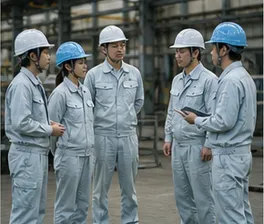
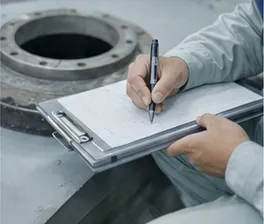
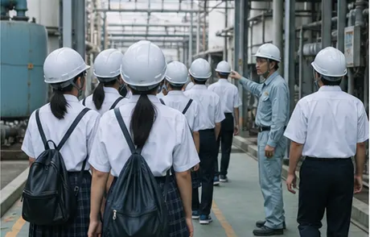
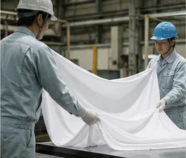
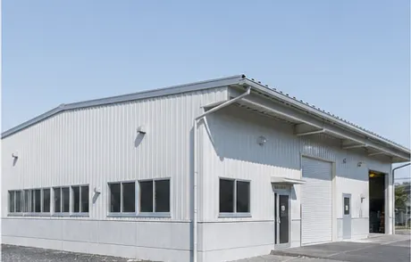

Message
ごあいさつ

完成したら見えなくなる仕事を、
見えていたときと同じ丁寧さで。
凪ライニング工業は1974年、倉敷市水島のコンビナートのそばで、タンクの内面を直す小さな工場として始まりました。以来、薬液を扱う設備の内側を守ることだけを続けてきました。
私たちが貼ったシートは、設備が動き出すと誰の目にも触れません。だからこそ、下地の処理から継ぎ目の1か所まで、決めた手順を変えずに積み重ねることを大切にしています。
設備が予定どおり動き、中を通る液がきれいなまま保たれること。お客様にとって「何も起きない」毎日を支えることが、私たちの役目だと考えています。
代表取締役社長岸本 悠介
Philosophy
経営理念
内側は、静かなほどいい。
腐食も、汚れも、予定外の停止もない設備をつくる。
それが、私たちがお客様と社会に約束することです。
- 01
見えないところほど丁寧に
完成後に隠れてしまう工程ほど、手を抜かずに記録を残します。
- 02
同じ精度で続ける
一度きりの出来ばえより、何度やっても同じ品質で仕上がることを大事にします。
- 03
現場の話をよく聞く
設備を毎日動かしている人の話の中に、答えの手がかりがあると考えています。

Quality
品質への考え方
内張りの品質は、仕上がったあとから確かめられる部分がかぎられています。だから私たちは、工程の途中で確かめ、その結果を残すことを品質の中心に置いています。
下地の粗さ、接着剤の温度と時間、溶接の条件、検査の結果。工程ごとの値を記録し、社内の手順書と照らし合わせてから次の工程へ進みます。手順書は現場の声をもとに毎年見直しています。
Community
地域とのかかわり
水島の工場の仕事は、地域の人に支えられています。私たちも、できることから地域にかかわっています。

工場見学の受け入れ
地元の高校生や高専生を工場に招き、ライニングの仕事を実際に見てもらっています。

インターンシップ
夏と冬に、学生が数日間現場で一緒に働くインターンシップを開いています。

工場周辺の清掃
月に一度、始業前に社員で本社工場のまわりと通勤路の清掃をしています。
History
沿革
- 1974年4月
- 岡山県倉敷市水島に設立。タンク内面の補修を始める
- 1983年
- フッ素樹脂シートによるライニングの施工を始める
- 1991年
- 三重県四日市市に四日市営業所を開設
- 1998年
- 本社工場に第2ライニング棟を建設。大型タンクの工場施工に対応
- 2005年
- 千葉県市原市に千葉テクニカルセンターを開設
- 2014年
- 自社材料「凪シールド GC」の施工を始める
- 2020年
- 岸本 悠介が代表取締役社長に就任
- 2026年7月
- 四日市営業所を移転。本社工場に第3ライニング棟が完成
Profile
会社概要
- 社名
- 凪ライニング工業株式会社
Nagi Lining Works Co., Ltd. - 設立
- 1974年4月
- 資本金
- 8,000万円
- 代表者
- 代表取締役社長 岸本 悠介
- 従業員数
- 96名（2026年4月時点）
- 事業内容
- フッ素樹脂ライニングの設計・施工・検査
タンク・配管・熱交換器ほか化学設備の内面防食、補修・張り替え - 本社・工場
- 〒712-8064 岡山県倉敷市水島西通2丁目8番15号
- TEL / FAX
- 086-908-4210 / 086-908-4211
- 主な取引先
- 化学、半導体・電子材料、医薬、めっき・表面処理などの製造業、プラントエンジニアリング会社
Offices
事業所一覧
-
本社・工場
倉敷本社工場
〒712-8064 岡山県倉敷市水島西通2丁目8番15号
TEL 086-908-4210 / FAX 086-908-4211設計・施工・検査の拠点。ライニング棟3棟と試験室があります。
営業所
四日市営業所
〒510-0051 三重県四日市市千歳町5番21号 2階
TEL 059-340-7215中部・近畿のお客様の窓口。2026年7月に移転しました。
技術拠点
千葉テクニカルセンター
〒290-0045 千葉県市原市五井南海岸12番4号
TEL 0436-63-5180関東のお客様の窓口と、構内施工の段取りを受け持つ拠点です。